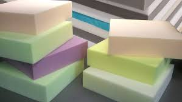
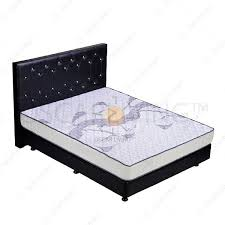
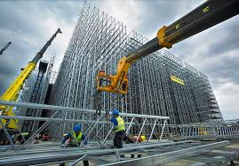
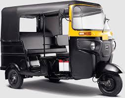
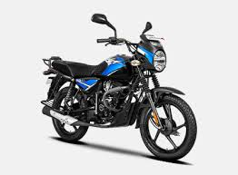
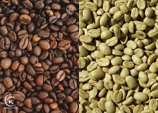
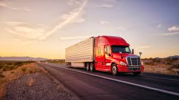
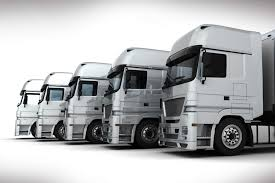

New Flower General Trading PLC was established in 2014 G.C. and started its operations in 2014 G.C at the outskirt of Addis Ababa, Ethiopia.
Foam production is the process of creating gas bubbles in a material to create a lightweight, resilient foam


Construction is the process of creating physical structures, such as buildings or infrastructure, through a series of planned steps

A motor company is a company that manufactures motor vehicles. Some of the biggest motor companies in the world include:


A coffee company is a business that sells coffee and related products and services

Transportation companies are responsible for the efficient movement of freight—goods or cargo—across various distances.

